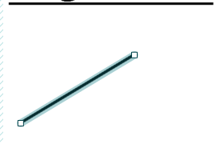
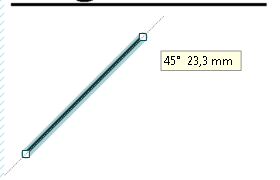
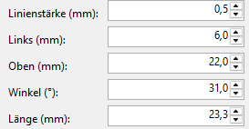
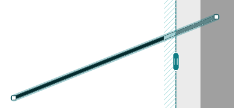
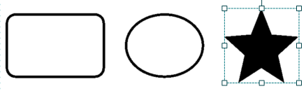
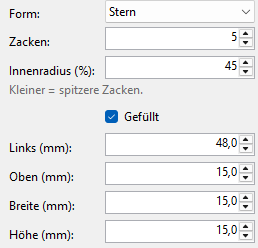

Linien und Formen
Linien trennen Bereiche auf dem Etikett, Formen fassen etwas ein, setzen ein Zeichen oder werden zur schwarzen Fläche.
-
Linie
Werkzeug Linie oder Einfügen > Linie. Rechts stellen Sie die Linienstärke (mm) ein.
Eine ausgewählte Linie hat ein helles Band und an jedem Ende einen Anfasser.

Ziehen Sie an einem Ende, um die Linie zu verlängern oder schräg zu stellen. Neben der Maus stehen Winkel und Länge. Bei 0°, 45°, 90°, 135° usw. rastet sie ein, sobald sie weniger als 5° davon entfernt ist; eine gepunktete Hilfslinie zeigt das. Waagerechte und senkrechte Linien rasten außerdem an den Kanten und der Mitte des Etiketts ein.

Genau einstellen lässt sie sich rechts: Winkel (°) von 0° (waagerecht) über 90° (senkrecht) bis 180° und Länge (mm). Beim Eintippen bleibt das linke Ende, wo es ist (bei einer senkrechten Linie das untere).

Ragt eine Linie über das Etikett hinaus, ist der Teil draußen entlang der Linie hell markiert; er wird nicht gedruckt.

-
Formen
Gruppe Formen in der Werkzeugleiste oder Einfügen: Rechteck, Ellipse, Dreieck, Polygon und Stern. Rechts stellen Sie ein:

- Form: eine andere Form; Größe und Lage bleiben
- Ecken (Polygon) oder Zacken (Stern): 3 bis 20
- Innenradius (%) (Stern): 10 bis 90; kleiner = spitzere Zacken
- Ecken abrunden (mm) (Rechteck): 0 = eckig
- Linienstärke (mm): die Linie liegt innen am Rand der Form
- Gefüllt: eine schwarze Fläche statt einer Linie (dann ohne Linienstärke)
Halten Sie beim Ziehen an einem Eck-Anfasser Umschalt gedrückt, wird die Form regelmäßig: ein Quadrat, ein Kreis, ein gleichseitiges Dreieck, ein gleichmäßiges Polygon oder ein gleichmäßiger Stern.

Eine Form lässt sich um jeden Winkel drehen, siehe Drehen und Anordnen. Rahmen aus älteren Etiketten öffnen sich als Rechteck oder Ellipse.
-
Lage und Größe genau
Für jedes Objekt stehen rechts Links (mm), Oben (mm), Breite (mm) und Höhe (mm). Dort tippen Sie Maße auf den Zehntelmillimeter genau ein. Bei einer Linie stehen statt Breite und Höhe Winkel (°) und Länge (mm).